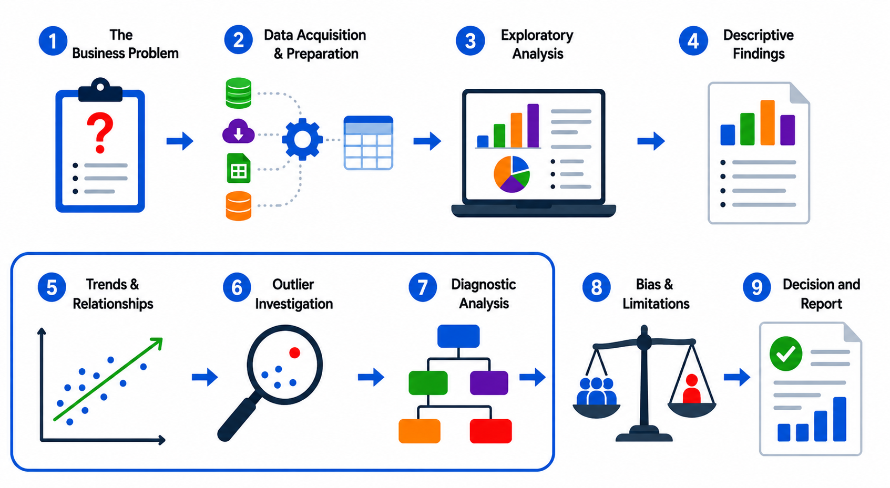

Reasoning from Data
The first part of the data workflow focused on understanding the business problem, preparing the data, exploring the dataset, and describing what happened. The next stage moves beyond description and asks deeper questions: what patterns are present, what unusual values need attention, what explains the result, and what limits the analysis? At this point, the analyst is no longer just organizing evidence; the analyst is interpreting it, testing it, and deciding how much confidence the organization should place in it. AI can support this process, but it also adds new concerns about reliability, bias, transparency, explainability, and decision risk.
This chapter continues the workflow with steps 5 through 7. Together, these stages move the work from "what happened" to "why it happened" and help the analyst separate a useful explanation from a tempting guess.

5. Trends and Relationships
Once the analyst has described the observed results, the next question is whether the data shows meaningful patterns. This stage looks for trends and relationships between variables. A trend might show that sales are increasing over time, while a relationship might show that higher website traffic is associated with higher sales. Tools such as correlation and regression can help measure and model these relationships, but they do not prove that one variable caused the other. A dashboard may show that website traffic and sales both increased, but that alone does not mean traffic caused the increase in sales.
This distinction matters because strong analysis depends on careful reasoning. It is easy to confuse association with cause, especially when two measures move together. An analyst must ask whether the pattern is meaningful, whether another factor may be involved, and whether the relationship is stable enough to matter to the business. Trends and relationships are valuable because they point the organization toward likely explanations, but they are only part of the story.
Comprehension Check 1 of 5
Comprehension Check 2 of 5
6. Outlier Investigation
Not every unusual value is a mistake, but every unusual value deserves attention. Outlier investigation goes beyond simply noticing extreme values and asks what those values represent and how they should be handled. A salary dataset, for example, might contain 49 employees earning around $40,000 and one employee earning $3 million. That one value could distort the average and make the data misleading if it is treated like a typical salary.
Outliers can represent errors, fraud, special circumstances, unusual events, system problems, or a new business condition. That is why an outlier is an analytical question, not automatically a data-quality error. The analyst has to determine whether the value should be corrected, excluded, explained, or preserved as a meaningful exception. Sometimes an outlier reveals an important event that deserves attention. Other times it reveals a simple error that should have been fixed during preparation. Either way, the value should not be ignored.
Comprehension Check 3 of 5
7. Diagnostic Analysis
Descriptive analysis tells what happened. Diagnostic analysis asks why it happened. At this stage, the analyst studies the patterns more closely to identify causes, root causes, and relationships that help explain the result. The goal is to move from observation to actionable insight. This may reveal an operational bottleneck, an underperforming marketing campaign, or another factor that helps explain the outcome.
This step works closely with descriptive findings from the previous chapter. For example, if call center satisfaction dropped by 20 percent, the next question might be which region was affected, which employees were involved, whether staffing changed, whether call volume changed, or whether wait time increased. Diagnostic analysis often begins with a broad result and then drills down into smaller groups, time periods, or variables until the likely explanation becomes clearer.
The important point is that diagnosis should be evidence-based. An analyst may have a hypothesis about the cause, but that hypothesis should be tested against the data rather than assumed. Good diagnostic analysis helps the organization understand where to focus attention and which changes are most likely to improve performance.
Comprehension Check 4 of 5
Comprehension Check 5 of 5
Why This Workflow Matters
These steps create the logic of sound analysis. They move the work from observed results, to patterns and explanations, to a thoughtful report that the organization can act on. The analyst does not just process data; the analyst interprets it, questions it, and communicates it in a way that supports decision-making. That is why the workflow matters: it keeps analysis grounded in the business problem, careful about the evidence, and honest about the limits.
Chapter Completion
Answer all five comprehension questions, then check your work.
Chapter complete
Copy or write down this access code. You will need it later in class to receive your points.
data-reasoning